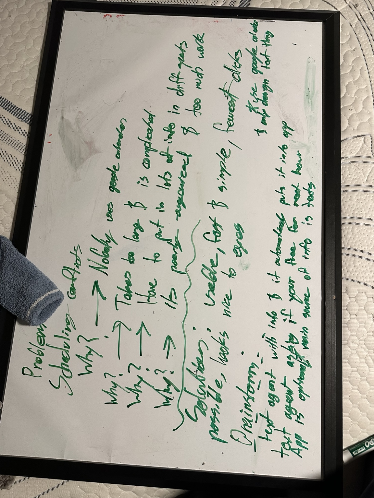
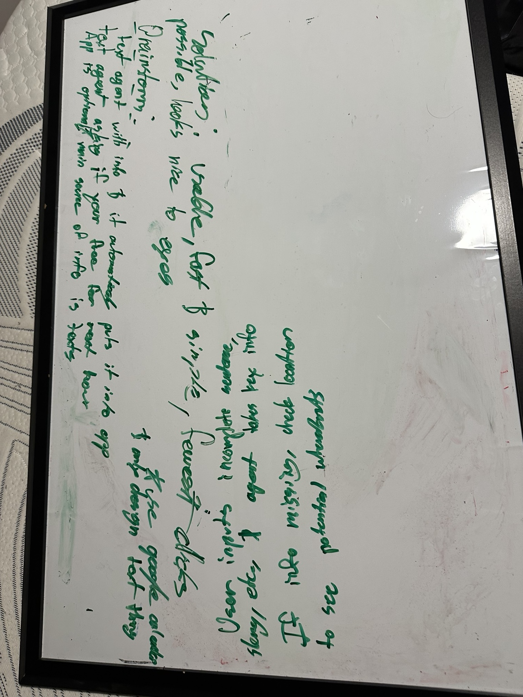
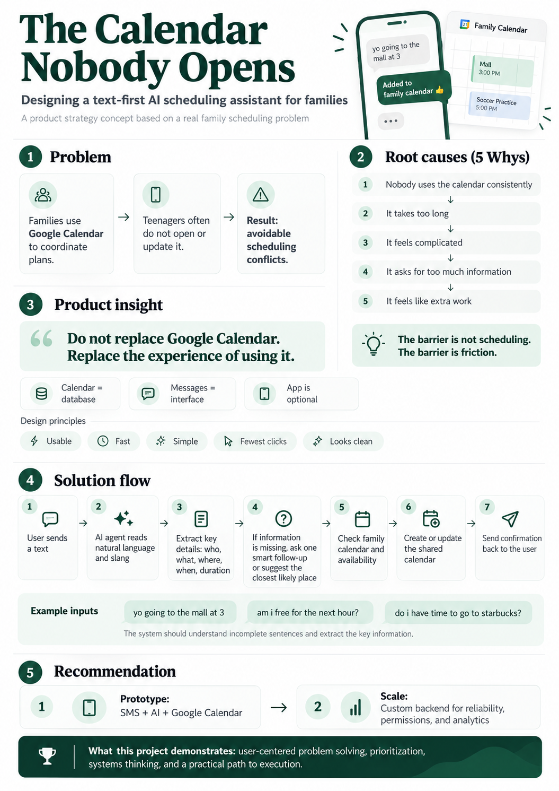

01 / The case study
The problem I noticed
My family relies on Google Calendar to coordinate schedules. But the teenagers in my family—including the people who need to keep it updated—frequently don’t use it.
When plans never make it into the shared calendar, we run into scheduling conflicts and extra back-and-forth messages. I noticed this through my own experience, and started asking what was getting in the way.
“What if the problem isn't the calendar itself, but the effort required to use it?”
Personal observation: this describes my family’s experience, not research about all teenagers.
02 / The case study
My thought process
I began by breaking the problem down on a whiteboard. Instead of assuming we needed a better calendar, I considered why someone might avoid using the one we already had.




My initial root-cause hypotheses
- Family scheduling conflicts happen.
- Teenagers aren't consistently using the calendar.
- Opening and updating the calendar feels inconvenient.
- Entering detailed information can feel unnecessarily complicated.
- The process creates friction compared with simply sending a text.
These are my initial hypotheses. I would need to test them with users before treating them as proven causes.
Principles that followed
If effort was the barrier, each step should earn its place. I wanted to work with the habit of sending a message rather than require a new habit first.
03 / The case study
My key insight
“Don't replace Google Calendar. Replace the experience of using it.”
I realized the existing calendar could remain the underlying system. Text messaging could become the primary interface, with AI helping interpret everyday language.
- Google Calendar
- The scheduling database
- Messages
- The user interface
- AI
- The natural language interpreter
- Traditional mobile app
- Optional, rather than the starting point
This choice came from thinking about user habits. The goal wasn't to add technology for its own sake; it was to reduce the effort between making a plan and recording it.
04 / The case study
The proposed solution
My concept is a text-first AI scheduling assistant for families. Someone could send a casual message to add a plan or ask about their availability, while the shared calendar stays behind the scenes.


The infographic summarizes my initial hypotheses. For ambiguous locations or scheduling details, my recommendation is to clarify before updating the calendar.
Start with the way people actually talk.
A request, from message to response
- User sends a message
- AI interprets the request
- Extracts important details
- Clarifies missing information
- Checks the calendar
- Updates an event or answers the question
- Responds to the user
The assistant would aim to understand slang and incomplete sentences. But “the mall at 3” may leave the date, location, or duration unclear. I would have it ask for those details rather than create an event from unsupported assumptions.
This is a proposed interaction flow, not a functioning assistant or an implemented prototype.
05 / The case study
My product recommendation
I would start with the smallest version that tests the central idea: can a text become the correct event on a shared calendar?
Stage 01
Basic prototype
Connect an SMS service such as Twilio, an automation platform such as Zapier, the OpenAI API, and Google Calendar. Focus on correctly turning a message into one event.
Stage 02
Custom backend
Add user accounts and authentication, conversation memory, family permissions, conflict detection, reliability improvements, and privacy controls.
Stage 03
Potential public product
Validate with more users. Establish secure account connections, monitoring, appropriate permissions, and a sustainable business model before considering a wider release.
Starting small would let me test the behavior change before committing to a complete application. A custom backend would make sense when the prototype’s limits become clear.
06 / The case study
Testing and success metrics
I would test the prototype with a small number of families before expanding. The important question is whether it makes calendar use easier and more consistent—not just whether it can interpret a message.
| Proposed measurement | What I would learn |
|---|---|
| Successful calendar updates / attempted updates | Whether requests reliably become correct events |
| Average time to create an event | Whether texting reduces effort compared with calendar entry |
| Follow-up messages per request | Whether clarification adds too much friction |
| Weekly usage by family member | Whether the interface becomes a recurring habit |
| Frequency of scheduling conflicts | Whether better calendar entry improves coordination |
Proposed measurements only. No user testing or measured results are being claimed.
07 / The case study
Challenges and trade-offs
Convenience alone isn't enough. I would need to balance speed, accuracy, privacy, and feasibility.
How do I avoid entering incorrect events?
I would validate required details, flag conflicts, and ask for confirmation when an interpretation could materially change a plan.
What if a message is ambiguous?
The assistant should ask a short, specific follow-up instead of guessing a location, time, or event duration.
What should parents be able to see?
I would define family permissions with users, rather than assume every calendar detail should be visible to everyone.
When should the assistant ask for confirmation?
I would test which actions need confirmation and how much friction that adds, especially for changes affecting other family members.
Is messaging really more convenient?
I would compare it with direct calendar entry. If clarifications take longer than opening the app, the concept may need to change.
Could the product sustain itself financially?
I would investigate messaging and AI costs, ongoing support needs, and willingness to pay before recommending a public business model.
08 / The case study
Reflection and next steps
Developing this concept helped me think more carefully about the difference between a visible problem and its possible causes. An unused calendar may be a symptom of friction, rather than a reason to build another calendar.
I also learned to separate the essential idea from a full feature list. A useful first test would focus on a simple behavior: sending a text and getting a correct event in return.
What I would do next
- Build and test a basic prototype.
- Collect feedback from a small number of families.
- Compare texting with traditional calendar entry.
- Revise the concept based on the results.
09 / The case study
My role and use of AI
This project originated from my own observations and whiteboard brainstorming. I identified the problem, developed the initial solution concept, and defined the product's design priorities. I used AI tools to help organize, communicate, and visually present my thinking.
Original work: problem observation, initial concept, and design priorities. AI-assisted work: organization, wording, and visual presentation. This portfolio presents a concept, not a launched product.